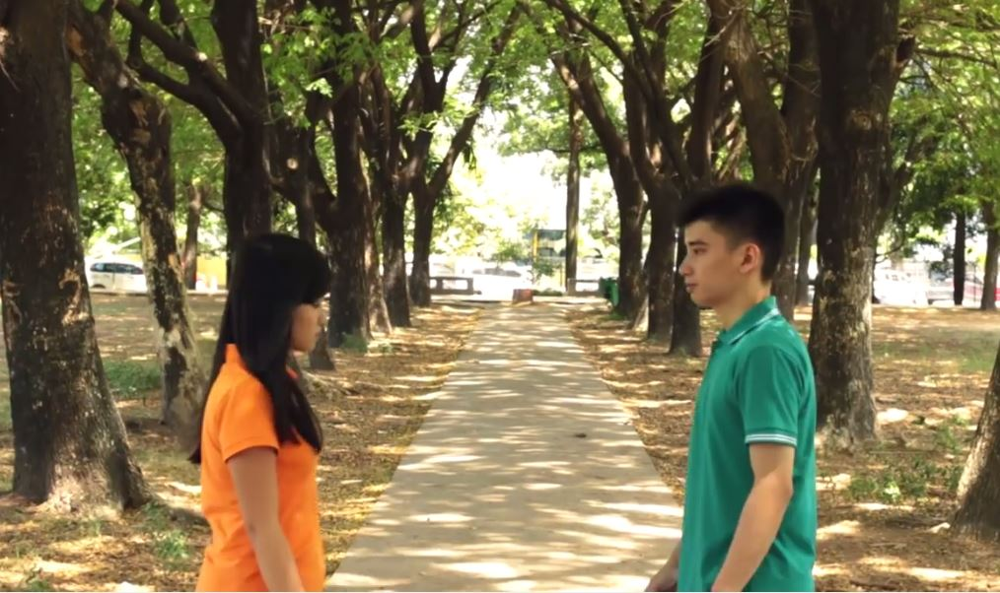

KEGIATAN UMK FILEM

AADC 2 FanFic Trailer
AADC 2 FanFic Trailer
Dipublikasikan tanggal 13 Apr 2016
14 tahun, Ratusan purnama dan ribuan hari telah berlalu. Rangga kembali ke indonesia untuk mengunjungi Cinta. Namun ternyata, Telah ada seseorang yang menemaninya..
Bagaimanakah hubungan Rangga dan Cinta selanjutnya?
Klik-disini untuk menonton Trailernya.

Another - Short Movie Thriller
Dipublikasikan tanggal 4 Jul 2016
Sebuah Film bertemakan Thriller dengan judul "Another" karya Mahasiswa Stmik Kharisma makassar.
Klik-disini untuk menonton filmnya

Dies Natalis 16 STMIK KHARISMA Makassar
Dipublikasikan tanggal 8 Okt 2016
Dies Natalis ke-16 STMIK KHARISMA Makassar. Dipublikasikan oleh Hendra Tan
Klik-disini untuk menonton keseruannya.